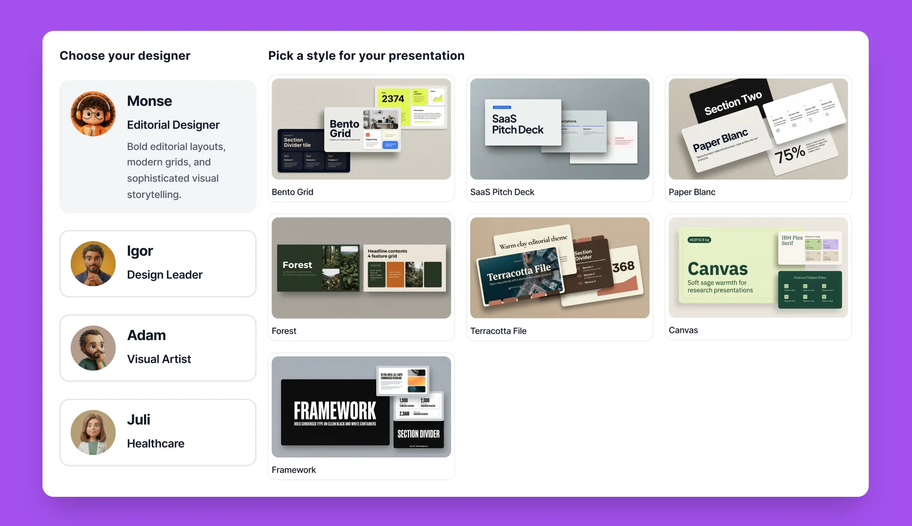
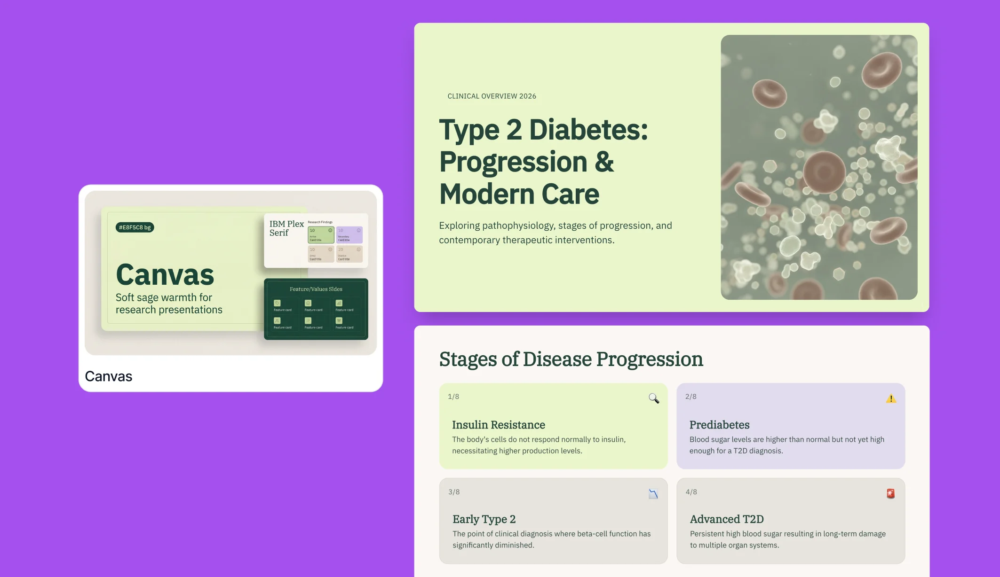
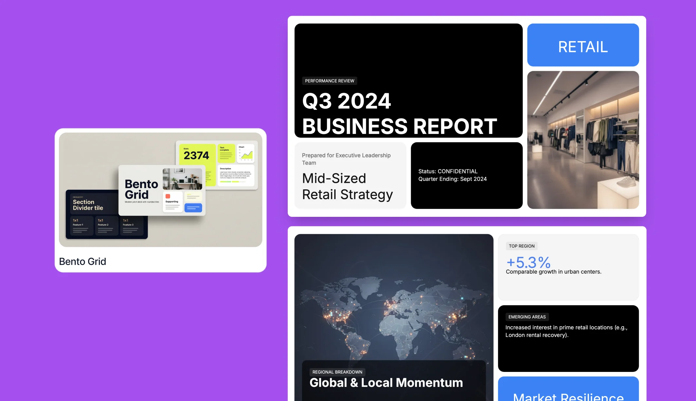
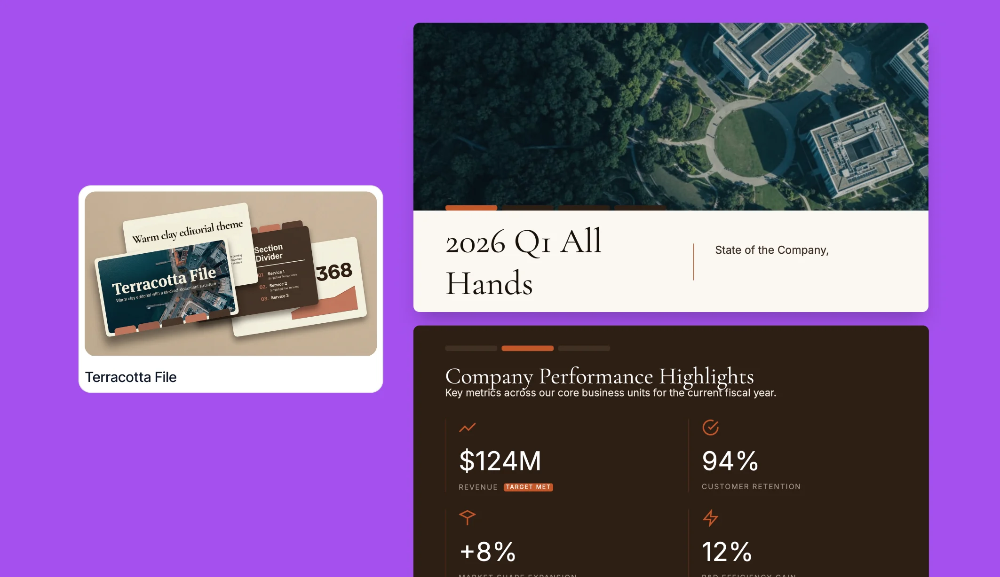

Evolution of Templates
From designing for users, to designing systems, to designing for AI — the same challenge, with new constraints each time.
01
Context
Each new product evolution changed how templates needed to work. It wasn't a single project — it was a pattern that repeated three times, each time with tighter constraints: first designing for a user who customizes everything, then for a system that has to look good without knowing what content a user will add, and finally for an AI that has to make those same design decisions on its own.
02
Role & challenge
My role — I designed templates across all three evolutions of the product — Storyblocks, Open Canvas, and the AI generation layer — carrying what I learned in each phase into the next.
Each stage introduced a different design constraint. Rather than redesigning from scratch, we adapted the system to support how the product generated presentations.
03
Four phases
Every phase repeated the same core challenge with tighter constraints — designing without knowing what content the user will place.
From customization to repetition
Designing highly customizable presentations, I started noticing which structures repeated across unrelated projects.
From template to organization
The challenge was no longer just offering structure — it was grouping content without it feeling crowded.


Keeping content together
Keep open canvas elements next to each other to avoid the animation jumping to one side to the other.
Built once, reused everywhere
Creating reusable frames to group content in a scalable, reusable way.
From organizing to teaching
As the product evolved, the goal was no longer to build templates, but to generate assets and layouts so the AI could analyze the content and choose the right visuals on its own.
From layout to instruction
The design work concentrated on defining a clean, original visual style — not the layout itself. Rather than building the template, we built the prompt style.




04
Result
Product videos across the three phases show the progression clearly — from Storyblocks, to Open Canvas, to AI-assisted generation — each phase inheriting the organizing logic of the one before it, translated for a different kind of "user."
05
Reflection
This process taught me to adapt to technology based on real user needs. A template doesn't limit — it reduces mental noise so someone can decide better. I'd rather someone build their own presentation and carry their own voice through it, than have the system do everything for them: that's what builds confidence when they present it, and pride in what they made.
"A template doesn't limit. It reduces the noise so someone can decide better."